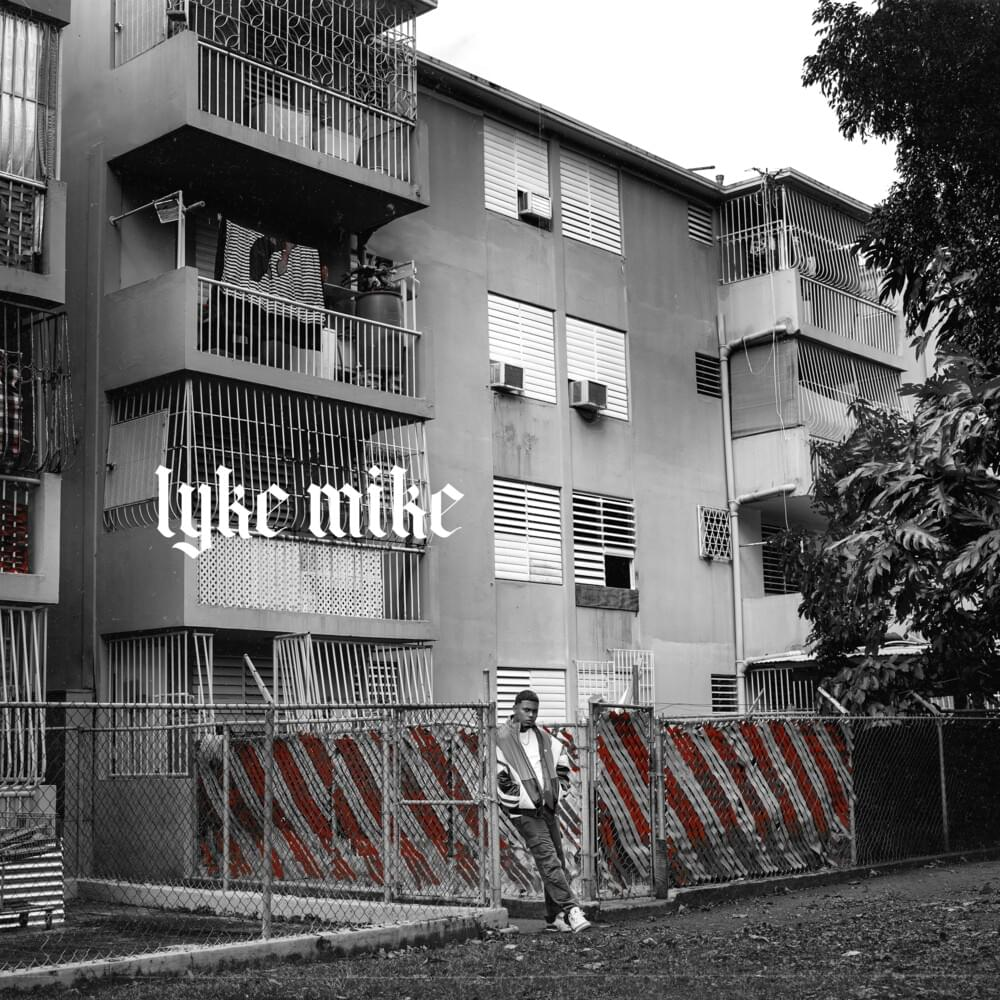

Inicios e "El final del principio" (2016-2018)
Nos seus primeiros pasos na música, comezou a publicar os seus primeros temas na plataforma dixital SoundCloud, onde logrou gañar certa aceptación en Porto Rico. Orixinalmente o seu nome artístico era Mike, pero foi modificado como Myke para xuntar as letras «Y» y «K», que significan Young Kingz.
En 2016 publicou o seu mixtape debut "El final del principio", que debutou no primeiro lugar da lista iTunes e alcanzou o posto número doce no Latin Rhythm Albums. O disco estivo producido polo sello discográfico G Starr Entertainment do cal se desprenden sencillos como «Dinero en mano», «Déjate ver», «No sabe nada» ou «Alternativas».
"Easy Money Baby" (2019-2020)
 En 2019 estreou os sencillos «Si se da», xunto a Farruko e posteriormente lanzou a versión remix en colaboración con Arcángel, Sech, e Zion. Tamén lanzou a versión remix de «La playa» que contou con Maluma e Farruko, e colaborou con Becky G na canción «Dollar», a cal foi lanzada cun video musical o 12 de xulio. O 20 de decembro, lanzou «Perriandote» xunto a Luigi 21 Plus e Ñengo Flow.
O 24 de xaneiro de 2020, publicou o seu álbum de estudio debut titulado Easy Money Baby, en honra ao seu fillo Shawn Torres. O álbum alcanzou o posto número un no Top Latin Albums durante 83 semanas consecutivas e foi nominado para os Premios Grammy Latinos como mellor álbum de música urbana. Coa sua participación con Wisin en "Los Legendarios 001" na canción «Mi niña» alcanzou o primeiro lugar na RIAA, e posteriormente, colaborou para o remix xunto a Anitta e Maluma.
En 2019 estreou os sencillos «Si se da», xunto a Farruko e posteriormente lanzou a versión remix en colaboración con Arcángel, Sech, e Zion. Tamén lanzou a versión remix de «La playa» que contou con Maluma e Farruko, e colaborou con Becky G na canción «Dollar», a cal foi lanzada cun video musical o 12 de xulio. O 20 de decembro, lanzou «Perriandote» xunto a Luigi 21 Plus e Ñengo Flow.
O 24 de xaneiro de 2020, publicou o seu álbum de estudio debut titulado Easy Money Baby, en honra ao seu fillo Shawn Torres. O álbum alcanzou o posto número un no Top Latin Albums durante 83 semanas consecutivas e foi nominado para os Premios Grammy Latinos como mellor álbum de música urbana. Coa sua participación con Wisin en "Los Legendarios 001" na canción «Mi niña» alcanzou o primeiro lugar na RIAA, e posteriormente, colaborou para o remix xunto a Anitta e Maluma.
"Lyke Mike"

O 23 de abril de 2021 publicou o seu segundo álbum de estudio Lyke Mike. O título fai referencia ao seu nome artístico anterior, mentras que o número de pistas fan homenaxe ao número de camiseta do exbaloncestista Michael Jordan. Conta coas colaboraciones de Jon Z, Ñengo Flow e Sahir.
"La vida es una"
O 23 de marzo de 2023 lanzou o seu terceiro álbum de estudio "La vida es una", que contempla xéneros variados. Tamén inclúe vintetres cancións, entre elas colaboracions de Arcángel, J Balvin, Chita, Ozuna e Daddy Yankee. Durante xulio de 2023, a pista número vintedous «Lala» ubicouse entre as posicións máis altas nas listas de varios países, a partir da súa viralización na plataforma TikTok. Tamén se convirteu na primeira canción de Towers en liderar a lista Global 200 Excl. US de Billboard.